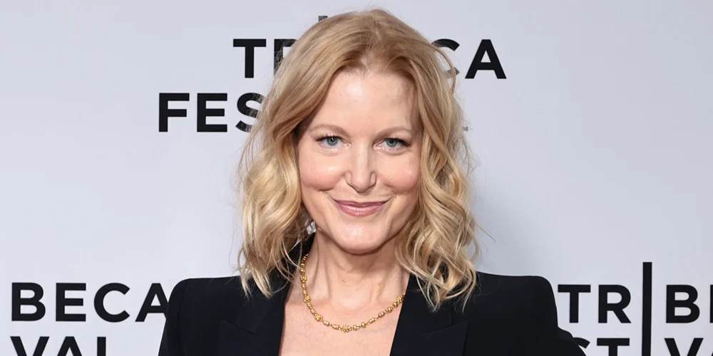
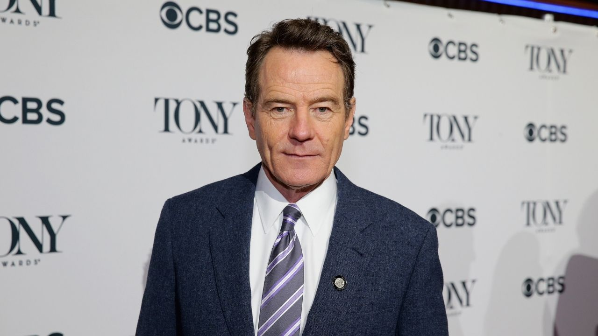
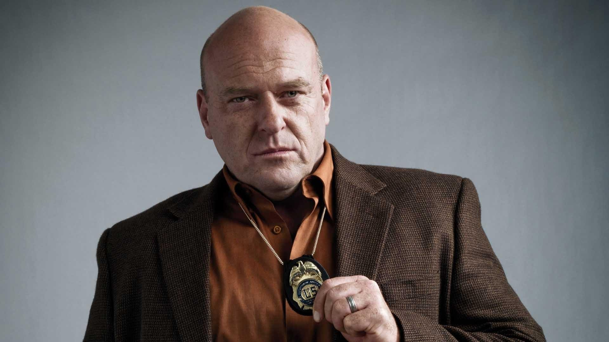
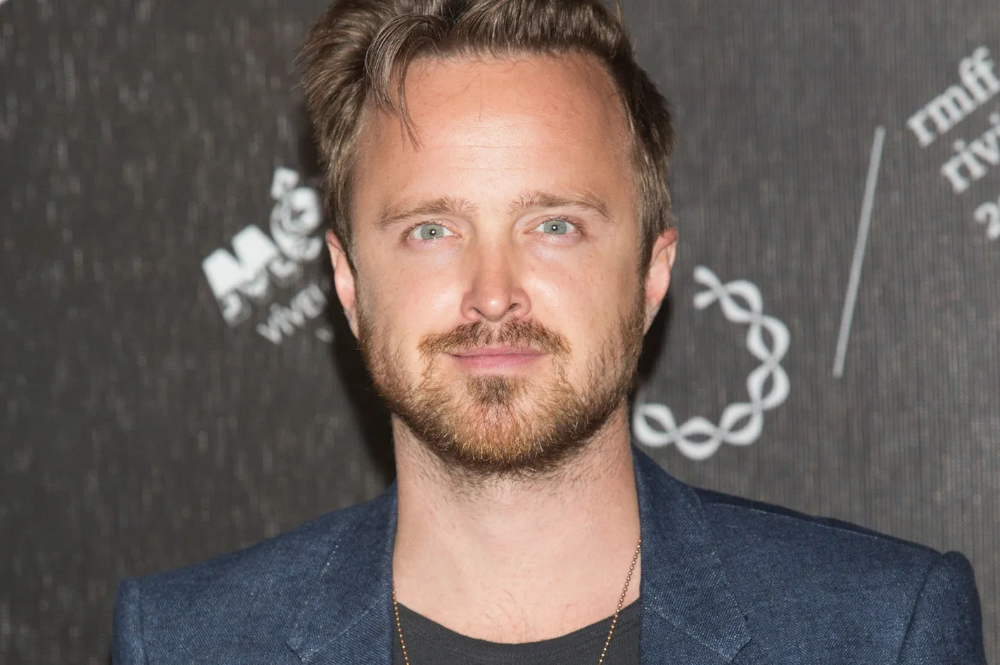

Anna Gunn
Personagem: Skyller White
Anna Gunn, nascida em 11 de agosto de 1968 em Santa Fé, é uma atriz americana reconhecida
principalmente por seu papel como Skyler White na série de televisão Breaking Bad. Ela ganhou
Prêmios Emmy do Primetime de Melhor Atriz Coadjuvante em Série Dramática em 2013 e 2014 por esse
papel.
Além de Breaking Bad, Gunn teve papéis notáveis em séries como The Practice e Deadwood. Ela
também fez aparições em programas como Seinfeld e Six Feet Under, e forneceu a voz de Ariel na
série de jogos eletrônicos Legacy of Kain. No cinema, seus créditos incluem filmes como Enemy of
the State e Red State.
Em 2013, Gunn escreveu um artigo para o The New York Times explorando a antipatia pública em
relação à sua personagem em Breaking Bad. Ela também foi escalada para estrelar o episódio
piloto da série dramática Rita, baseada em uma produção dinamarquesa sobre uma professora de
escola particular que também é mãe.
Leia mais...

Bryan Cranston
Personagem: Walter White
Bryan Lee Cranston, nascido em Los Angeles em 7 de março de 1956, é um multifacetado artista
americano, destacando-se como ator, dublador, roteirista, diretor e produtor. Seu papel icônico
como Walter White na série dramática da AMC Breaking Bad lhe rendeu quatro Prêmios Emmy do
Primetime de Melhor Ator em Série Dramática.
Além de seu trabalho impressionante em Breaking Bad, Cranston é lembrado por seu papel como Hal
na série cômica da Fox Malcolm in the Middle e como Dr. Tim Whatley na série da NBC Seinfeld.
Cranston também mostrou suas habilidades de direção, dirigindo episódios de várias séries,
incluindo sete de Malcom in the Middle, três de Breaking Bad, dois de Modern Family e um de The
Office (Estados Unidos). Ele também deixou sua marca como ator em filmes aclamados como O
Resgate do Soldado Ryan (1998), Little Miss Sunshine (2006), Drive (2011), Argo (2012) e
Godzilla (2014). Não se limitando apenas a atuar, Cranston emprestou sua voz para dois monstros
da série Mighty Morphin Power Rangers.
Em 2016, Cranston recebeu uma indicação ao Oscar de Melhor Ator pelo seu trabalho no filme
Trumbo, mostrando sua versatilidade e talento em diferentes formas de expressão artística.
Leia mais...

Dean Norris
Personagem: Hank Schrader
Dean Joseph Norris, nascido em 8 de abril de 1963, é um talentoso ator americano. Ele é
reconhecido principalmente por seu papel como o agente da DEA Hank Schrader na renomada série da
AMC Breaking Bad (2008–2013) e em seu spin-off Better Call Saul (2020). Além disso, Norris
trouxe vida ao personagem do vereador James "Big Jim" Rennie na série da CBS Under the Dome
(2013–2015) e interpretou o impiedoso chefe da máfia Clay "Uncle Daddy" Husser na série da TNT
Claws (2017–2022).
Com uma carreira repleta de realizações, Norris deixou sua marca em uma ampla variedade de
filmes e programas de TV. Sua presença talentosa foi vista em obras cinematográficas como Lethal
Weapon 2 (1989), Hard to Kill (1990), Total Recall (1990), Terminator 2: Judgment Day (1991),
The Firm (1993), Starship Troopers (1997), The Cell (2000), Little Miss Sunshine (2006), Evan
Almighty (2007) e Sons of Liberty (2015). Mais recentemente, Norris brilhou em filmes como The
Book of Henry (2017), Death Wish (2018) e Scary Stories to Tell in the Dark (2019).
Leia mais...

Aaron Paul
Personagem: Jesse Pinkman
Aaron Paul, nascido Aaron Paul Sturtevant em 27 de agosto de 1979, é um aclamado ator e produtor
americano. Ele é famoso por sua interpretação de Jesse Pinkman na série Breaking Bad
(2008–2013), pela qual ganhou diversos prêmios, incluindo o Critics' Choice Television Award e o
Primetime Emmy Award. Além disso, ele reprisou o papel de Jesse Pinkman no filme El Camino: A
Breaking Bad Movie (2019) e na última temporada da série Better Call Saul (2022).
Paul começou sua carreira em vídeos musicais e papéis menores em filmes antes de alcançar o
estrelato com Breaking Bad. Após o sucesso da série, ele expandiu sua carreira para incluir
papéis em filmes como Need for Speed (2014), Exodus: Gods and Kings (2014) e Eye in the Sky
(2015). Ele também emprestou sua voz a Todd Chavez na série animada BoJack Horseman (2014–2020)
e atuou em séries como The Path (2016–2018) e Westworld (2020–2022). Em 2023, ele recebeu
elogios por seu papel no episódio "Beyond the Sea" da série Black Mirror.
Leia mais...

RJ Mitte
Personagem: Walter White Junior
Roy Frank "RJ" Mitte III, nascido em 21 de agosto de 1992, é um talentoso ator e produtor
norte-americano, conhecido por seu papel como Walter "Flynn" White Jr. na série Breaking Bad.
Assim como seu personagem na tela, Mitte enfrenta desafios devido à sua leve paralisia cerebral.
Originário de Lafayette, Louisiana, Mitte superou obstáculos desde o nascimento, incluindo danos
cerebrais permanentes. Sua mudança para Los Angeles em 2006 marcou o início de uma carreira
promissora na indústria do entretenimento.
Além de seu papel notável em Breaking Bad, Mitte ampliou sua presença na televisão e no cinema,
mostrando um compromisso com a representação inclusiva. Sua jornada inspiradora continua a
deixar um impacto duradouro na indústria do entretenimento.
Leia mais...